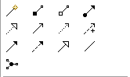
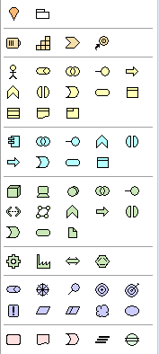

提示：选择调色板工具时按shift键或双击保留
提示：选择调色板工具时按shift键或双击保留默认情况下，一旦在画布上绘制了元素或连接，就会在调色板上重新选择默认选择工具（箭头）。如果您希望保持当前调色板工具处于选中状态，请在选择它时按住“Shift”键或双击它。单击即可清除此选项。
除了选择工具，Palette 上还有其他工具可用于创建新的 ArchiMate 概念、备注、分组和概念之间的关系（连接）。要将新元素添加到画布，请选择一个并将其拖到或单击画布。
ArchiMate 关系和连接元素有多种类型。
调色板中的关系创建工具
第一个工具是魔术连接，用于绘制连接。随后是用于 ArchiMate 关系和连接元素的创建工具。
用于向视图添加备注、分组容器或备注连接。

备注、分组和备注连接创建工具
这些分为与“其他”、“业务”、“应用”、“技术”、“物理”、“动机”和“实施与实施”相对应的区域。迁移”ArchiMate 概念分组：
ArchiMate 元素创建工具
请注意，这些元素的子集仅在当前视图仅限于给定的视点时才可用。
提示：选择调色板工具时按shift键或双击保留
默认情况下，一旦在画布上绘制了元素或连接，就会在调色板上重新选择默认选择工具（箭头）。如果您希望保持当前调色板工具处于选中状态，请在选择它时按住“Shift”键或双击它。单击即可清除此选项。